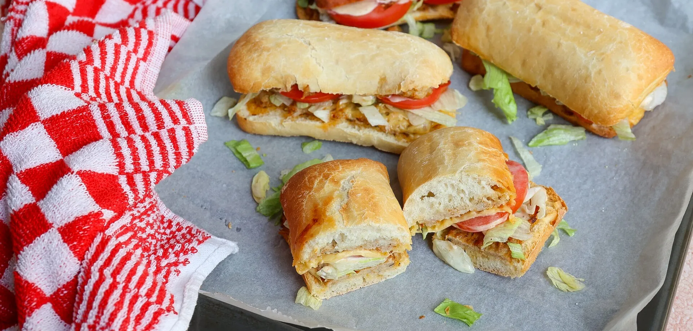

Broodje kip uit de oven

Ingredienten
- 2 ciabatta's
- 300 gr kipgehakt
- 2 tl cajun kruiden
- 1 tl tijm
- 200 gr ijsbergsla
- 1 tomaat
- zout en peper
Ingredienten voor de saus
- 3 el mayonaise
- 1 tl gembersiroop
- 1 tl paprikapoeder
- scheutje water
- zout en peper
Bereiding
- Verwarm de oven voor op 200 graden.
- Snijd de broodjes in de lengte open.
- Leg de broodjes op een bakplaat met bakpapier.
- Meng in een kom het gehakt met de cajun kruiden, tijm en een snufje zout en peper.
- Verdeel het gehakt over alle broodjes (dus het kapje en de onderkant).
- Bak de broden circa 15 minuten in de oven.
- Eventueel kun je ook nog een plakje kaas op het kipgehakt leggen.
- Maak ondertussen het sausje. Meng hiervoor alle ingrediënten door elkaar.
- Haal de broodjes uit de oven en beleg met saus, sla en tomaat.
- Leg het kapje erop en serveer direct.